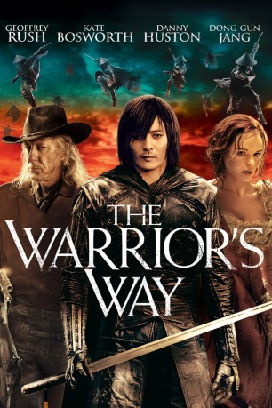

#11656 The Warrior's Way
 
 IMDB-Wertung: 6.3 / 10
IMDB-Wertung: 6.3 / 10  Tomatometer: 29
Tomatometer: 29  Metascore: 45
Metascore: 45 
Als der einst sonst so skrupellose asiatische Auftragskiller Yang einen Befehl verweigert, muss er untertauchen, um den Verrat an seinem Boss zu überleben. Er findet in einer amerikanischen Kleinstadt inmitten der Einöde Oklahomas Schutz, wo seine ersten menschlichen Kontakte ein Säufer und eine Messerwerferin sind. Schon sehr bald wird klar, dass die beiden ein dunkles Geheimnis bergen. Yang befindet sich in größerer Gefahr als angenommen.
Jahr: 2010
Dauer: 96 Minuten
FSK: 18
Land: Neuseeland Studio: Sony Pictures Home EntertainmentTonspuren:
Untertitel:
Auflösung: SD (688x288) Größe: 999 MB
Genre: Action, Fantasy, Western
Regisseur: Sngmoo Lee
Drehbuch: Sngmoo Lee, Scott Reynolds
Soundtrack: Javier Navarrete
Darsteller:
- Dong-Gun Jang als Yang
- Kate Bosworth als Lynne
 Geoffrey Rush als Ronald
Geoffrey Rush als Ronald Danny Huston als Colonel
Danny Huston als Colonel Tony Cox als Eight-Ball
Tony Cox als Eight-Ball Lung Ti als Saddest Flute
Lung Ti als Saddest Flute Jed Brophy als Jacques
Jed Brophy als Jacques- Nic Sampson als Pug
- Ashley Jones als Rug
 Phil Grieve als Ivar
Phil Grieve als Ivar- Neill Rea als Lynne's Father
- John Rawls als Hell Rider
- Josh Randall als Hell Rider
- Analin Rudd als Baby April
- Markus Hamilton als Baptiste
- Rod Lousich als Craig
- Matt Gillanders als Geyser
- Christina Asher als Esmerelda
- Carl Bland als Billy
- Ian Harcourt als Lofty
- Tony Wyeth als Smithy
- Ryan Richards als Slug
- Eddie Campbell als Colonel's Deputy
- Ebony Sushames als Mexican Daughter
- Aimee Renata als Mexican Daughter
- Patricia Santana als Mexican Wife
- Isbert Ramos als Mexican Husband
- Ross Duncan als Barkeep
- Makoto Murata als Sad Flute Deputy
- Chontelle Melgren als Young Lynne
- Cath Harkins als Lynne's Mother
- Elliott Officer als Lynne's Baby Brother
- Ken Smith als Young Yang (5 years)
- Jo Youngmin als Young Yang (10 years)
- Helene Wong als Grandmother
- Han-garl Lee als Greatest Swordsman
- Michael Deane als Sailor
- Ken McColl als Lion Tamer
- David Austin als One Man Band
- Brent Crozier als Cook
- Matthew Burgess als Young Slug
- Phoenix Brown Rigg als Young Rug
- Peter Daube als Hell Rider
- Itai Biran als Hell Rider
- Andy Conlan als Hell Rider
- Matthew Morris als Hell Rider
- Reuben de Jong als Hell Rider
- Robert Wootten als Clown
- Wayne Gordon als Clown
- Brenton Surgenor als Clown
Datei: X:\FSK18-2010\Warrior's Way, The (2010, FSK18, 688x288).avi seit 13.08.2019
Festplatte: FSK18
 Es gibt insgesamt 35 Filme in der Gruppe 'FSK18-2010'
Es gibt insgesamt 35 Filme in der Gruppe 'FSK18-2010'